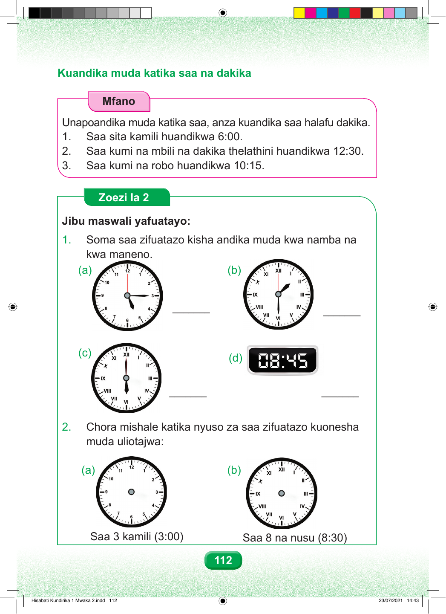

Kuandika muda katika saa na dakika. Mfano Unapoandika muda, anza kuandika saa, halafu dakika. Mfano wa kwanza. Saa sita kamili huandikwa sita nukta mbili sifuri sifuri. Mfano wa pili. Saa kumi na mbili na dakika thelathini huandikwa kumi na mbili nukta mbili thelathini. Mfano wa tatu. Saa kumi na dakika kumi na tano huandikwa kumi nukta mbili kumi na tano. Zoezi la Pili Jibu maswali yafuatayo. Swali namba moja. Soma saa zifuatazo, kisha andika muda kwa namba na kwa maneno. Sehemu a: mshale wa dakika unaelekea tatu, na mshale wa saa uko karibu na tano. Sehemu b: mshale wa dakika unaelekea sita, na mshale wa saa uko kati ya moja na mbili. Sehemu c: mshale wa dakika unaelekea kumi na mbili, na mshale wa saa unaelekea sita. Sehemu d: saa ya kidijitali inaonesha sifuri nane, nukta mbili, arobaini na tano. Swali namba mbili. Chora mishale kwenye nyuso za saa kuonesha muda uliotajwa. Sehemu a, saa tatu kamili. Sehemu b, saa nane na dakika thelathini. 112 Hisabati Kundirika 1 Mwaka 2.indd 112 23/07/2021 14:43